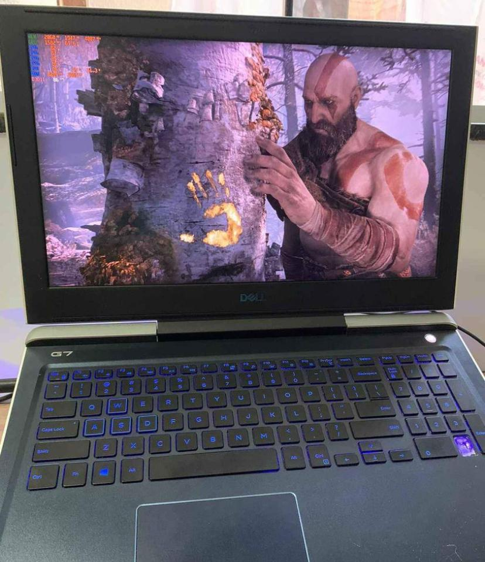
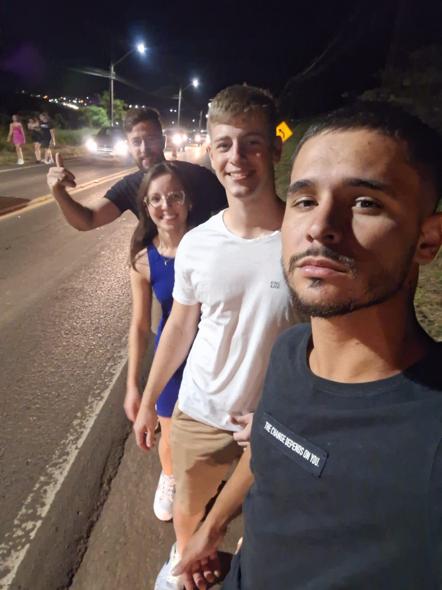
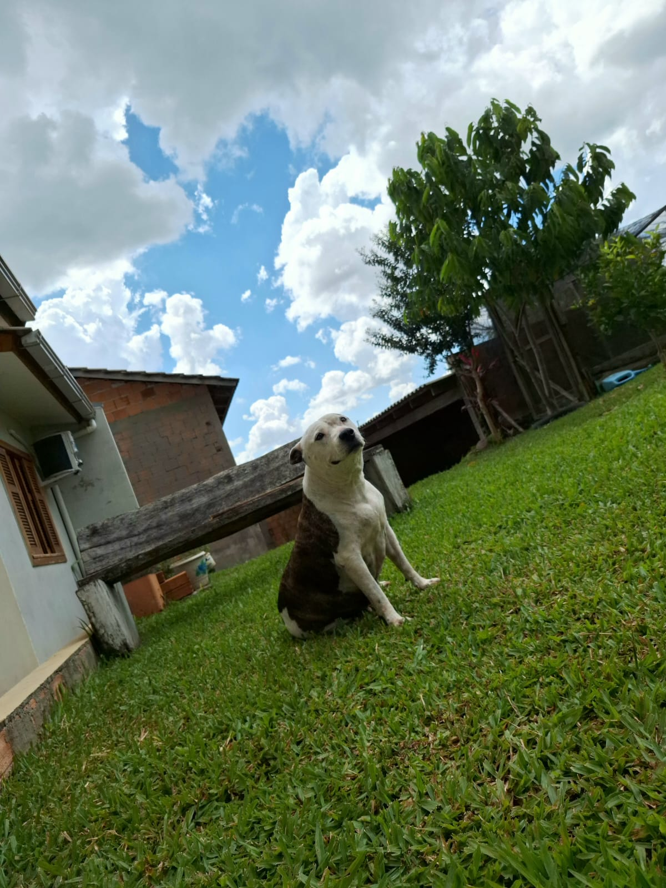
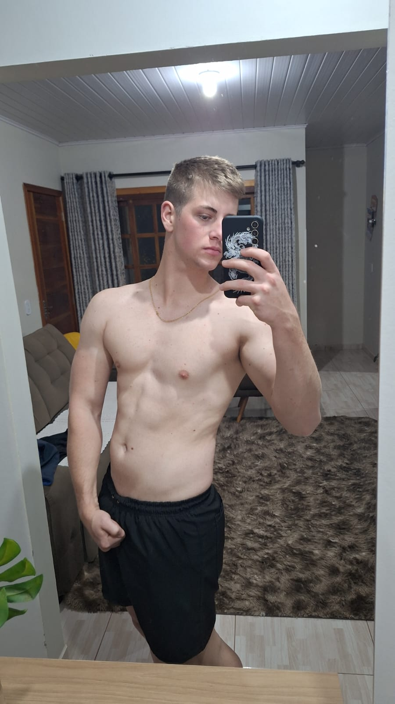

Meu amor pelos jogos não tem descrição. Minha adolescência foi passada na frente de um computador jogando, onde fiz grandes amizades e dei muitas risadas sinceras.

Depois de conhecer essas pessoas, meus finais de semana foram cheios de risadas e conversas. Vários rolês em festas, bares ou qualquer lugar em que a gente se encontrava.

Passar a tarde tomando um tereré na companhia da minha alma gêmea, a pitbull mais dócil que você pode conhecer. Conhecida como Jade, nome tirado de uma personagem de Mortal Kombat.

Agora, em 2024, a busca pelo shape está insana. A academia tem sido um dos meus lugares favoritos.